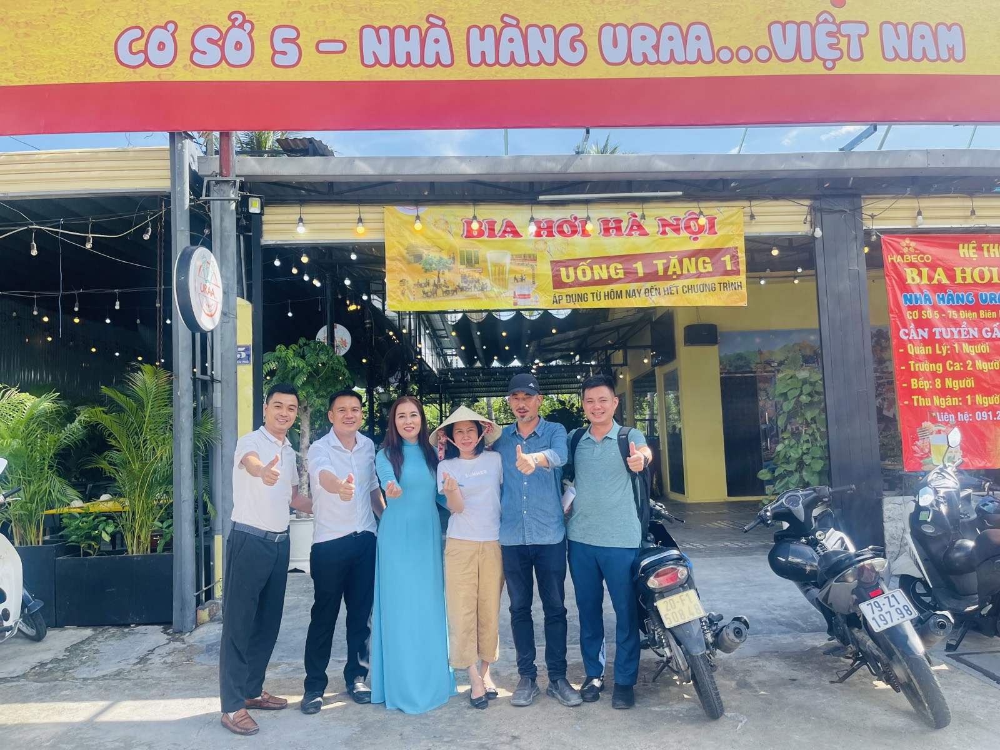
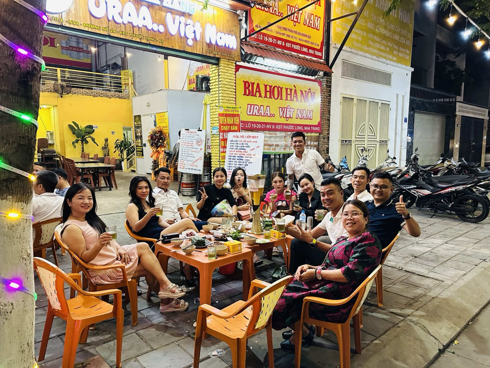

Bia hơi Hà Nội ở Nha Trang: vì sao tôi mang nó vượt 1.300km?
Khi tôi nói sẽ mở quán bia hơi Hà Nội ở Nha Trang, phản ứng phổ biến nhất là một cái nhíu mày: "Nha Trang là xứ hải sản, người ta uống bia gì sẵn đó rồi — bia hơi Hà Nội ai uống?"

Bốn năm sau, quán bia ấy vẫn sáng đèn mỗi tối ở Phước Long, và tôi vẫn tin điều mình tin từ ngày đầu: ở đâu có người Bắc xa quê, ở đó cần một vòi bia hơi đúng vị. Đây là chuyện thật đằng sau quán DŨNG URAA.
Năm 2022 — nhóm kỹ sư rời tập đoàn đi... bán bia
Cuối 2022, tôi cùng vài đồng nghiệp rời Vingroup — nơi tôi đã làm kỹ sư rồi quản lý dự án gần một thập kỷ. Chúng tôi chọn một ngành không thể xa chuyên môn cũ hơn: bia hơi Hà Nội.
Nghe liều, nhưng có một logic rất đời: cả nhóm đều là người Bắc sống ở Nha Trang, và đều thấm một nỗi thèm rất cụ thể — thèm cái vị bia hơi uống ở quê, thứ mà cả thành phố biển này khi ấy gần như không đâu có. Chúng tôi tin hàng nghìn người Bắc xa quê ở đây cũng thèm y như vậy. Vậy là làm — trở thành những người đầu tiên đưa bia hơi Hà Nội lan tỏa vào Nha Trang.
Bia hơi khác gì bia chai, bia lon — mà phải "mang" công phu vậy?
Nhiều khách phương Nam hỏi tôi câu này. Câu trả lời nằm ở một chữ: tươi.
Bia hơi là bia tươi ngắn ngày — không chất bảo quản như bia chai, bia lon. Đổi lại, nó đòi hỏi cả một chuỗi khắt khe: hàng phải về liên tục theo chuyến chứ không trữ được lâu, giữ lạnh xuyên suốt từ nhà máy đến tận vòi, bảo quản sai một khâu là hỏng cả bock. Mang nó vượt hơn 1.300km vào Nha Trang không đơn giản là chuyện chở hàng.
Và đây là điều tôi hay nói khiến nhiều người bất ngờ:
Ngay ở Hà Nội, chưa chắc anh/chị đã được uống một ly bia hơi Hà Nội chuẩn. Vì ly bia ngon hay không nằm ở cách người bán chăm nó — từ nhà máy đến tận vòi.
Khi rót ra đúng chuẩn — ly thủy tinh sóng sánh, lớp bọt mịn, vị nhẹ mà thanh, uống giữa trưa nắng biển — người Hà Nội xa quê nhấp một ngụm là thấy quê ở đó. Còn người Nha Trang thì tò mò uống thử, rồi thành khách quen lúc nào không hay.
Từ 6 cơ sở, còn lại một quán — và vì sao đó không phải thất bại
Thời điểm cao nhất, hệ thống của anh em chúng tôi có 6 cơ sở — ở Nha Trang, Cam Ranh, lên cả Buôn Ma Thuột. Rồi thị trường thay đổi, tôi cũng đi qua giai đoạn khó khăn nhất của mình, anh em mỗi người một hướng. Hệ thống thu gọn dần.


Vợ chồng tôi quyết định giữ lại đúng một nơi: quán đầu tiên — cái nôi khởi nghiệp — và đặt cho nó cái tên mới: DŨNG URAA. Không phải vì tiếc, mà vì hiểu ra một điều: làm nhiều chưa chắc bằng làm một thứ thật tử tế. Một quán thôi, nhưng vợ tôi đứng quán mỗi ngày, tôi có mặt mỗi tối, nhân viên được giữ như người nhà — và khách quay lại vì được đón như người quen.
DŨNG URAA hôm nay — một góc Hà Nội giữa Nha Trang
Quán nằm ở Số 07D, tầng 1 chung cư XH1, khu VCN Phước Long 2 — mở cửa từ 10 giờ sáng đến 11 giờ đêm, ly bia hơi giá 14 nghìn đồng. Thực đơn là món Bắc đúng điệu ăn kèm bia hơi, nấu kiểu mộc — thứ mà tôi vẫn nói vui với khách: "không sang, nhưng thật."

Khách của quán giờ đủ cả: các bác người Bắc vào đây an cư nghe tiếng bia hơi mà tìm đến, anh em bản xứ Nha Trang thành khách ruột, và thỉnh thoảng có bàn khách du lịch tò mò "bia hơi Hà Nội thật không". Với tôi, mỗi bàn khách như vậy là một lần cái quyết định "liều" năm 2022 được trả lời.
"Mình có làm ảnh hưởng đến ai hay không? Mình đã giúp được gì cho người khác hay không?" — hai trong ba câu tôi tự hỏi mỗi ngày. Ở quán bia này, câu trả lời đơn giản lắm: giữ đúng một vị bia tử tế, một bữa ăn thật thà, cho những người cần một chỗ ngồi thoải mái sau ngày dài.
Sống tử tế · Kiếm tiền hạnh phúc · Cho đi giá trị
Muốn thử vị Hà Nội giữa lòng Nha Trang?
Ghé DŨNG URAA thử một ly — anh/chị sẽ hiểu vì sao quán lúc nào cũng đều và đông khách.
Số 07D, Tầng 1, Chung cư XH1, VCN Phước Long 2, Nam Nha Trang · Mở cửa 10h–23h hằng ngày.